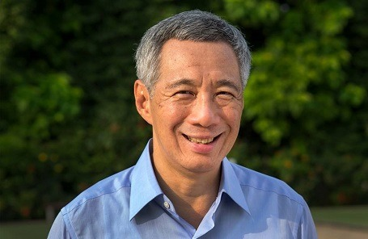

싱가포르 국기

싱가포르는 동남아시아, 말레이반도 끝자락에 위치한 섬나라이자 몇 없는 도시 국가 중 하나다.
싱가포르는 1963년 말레이시아 연방의 일원으로 영국으로부터 독립하고, 2년 뒤인 1965년에 말레이시아 연방까지 탈퇴하며 독립 국가가 됐다.
근대화에 성공하고 경제를 급속도로 성장시키며 한국, 홍콩, 대만과 더불어 '아시아의 네 마리 호랑이'라고도 불리는 싱가포르를 정리해봤다.
지도자 총통: 할리마 야콥

할리마 야콥은 2017년 취임한 싱가포르 최초의 여성 대통령이다. 야콥은 국가 대부분을 차지하는 중국계 후보 없이 단일 후보로 치러진 선거에서 무투표 당선됐다. 소수계 출신을 배려한다는 명목으로 중국계 후보들이 선거에 못 나오도록 개정된 법에 따른 결과였다. 그는 선거 이전 국회의장으로 재직 중이었다. 야콥은 무소속으로 선출됐다. 싱가포르의 대통령 후보는 정치적으로 공평해야 한다는 조항 때문에 모두가 무소속으로 출마한다.
총리: 리셴룽
2004년부터 싱가포르의 총리를 맡고 있으며, 초대 총리인 리콴유의 아들이기도 하다. 영국 케임브리지 대학 수학과 출신이자 싱가포르 군대 준장 출신이기도 한 리셴룽은 총리 취임 이후 경쟁력 있는 경제 체제를 구축한다는 이유로 교육 체계를 개편하고, 연구 개발에 투자를 늘렸다. 1984년 32살의 나이로 정계에 입문한 그는 총리 취임 이전 국방부 장관 정치비서관, 국방부 정무장관, 무역산업부 장관, 국방부 장관 등을 역임했다. 리셴룽은 아버지인 리콴유 전 총리의 유언을 중심으로 그의 두 동생과 공개적으로 갈등을 빚은 바 있다.
언론
싱가포르는 언론자유지수가 낮은 편이다. 자기검열이 흔하고, 정부의 허락 없이는 위성 수신도 불가능하다
매년 언론자유보고서를 발표하는 '프리덤 하우스(Freedom House)'는 싱가포르의 언론자유지수 순위를 하위권인 151위로 책정했다. 프리덤하우스는 싱가포르 관리들이 명예훼손 법과 선동 법을 근거로 국가 안보를 위협하는 글의 배포를 제한하고 있다고 설명했다. 별개로 싱가포르는 영어권 독자들이 많아 영미 언론사들이 동남아시아 전략 요충지로 선호한다. BBC 역시 싱가포르에 지부를 두고 아시아 지역 방송과 라디오 방송을 송신하고 있다. 싱가포르 내 언론사는 다음과 같다.
<싱가포르 프레스 홀딩스 그룹(SPH)> - 싱가포르 내 모든 신문을 소유 및 관리하는 최대 언론 그룹
<스트레이트 타임즈> - 싱가포르의 일간지로 SPH를 통해 발행된다.
<비즈니스 타임즈> - 싱가포르의 경제지로 역시 SPH를 통해 발행된다.
<미디어콥> - 싱가포르의 유일한 지상파 방송사업자이자, 라디오, 출판, 웹서비스, 방송 제작 및 프로덕션 종합 미디어 사업자.
<채널 뉴스아시아> - 미디어콥을 통해 방송되는 뉴스 채널.
<투데이> - 미디어콥을 통해 발행되는 온라인 언론사.
싱가포르 정보 표
| 국명 | 싱가포르 |
|---|---|
| 수도 | 싱가포르 |
| 언어 | 영어, 중국어, 말레이어, 타밀어 |
| 화폐단위 | 싱가포르달러 (2017년 평균 환율 1미불=1.3807싱불) |
| 종교 | 불교 (33.3%), 기독교(18.3%), 이슬람교(14.7%), 도교(10.9%), 힌두교(5.1%), 기타(17.7%) |
| 면적 | 719km2 (서울특별시 면적 : 605.5km2 |
| 인구 | 516만(2017년) |